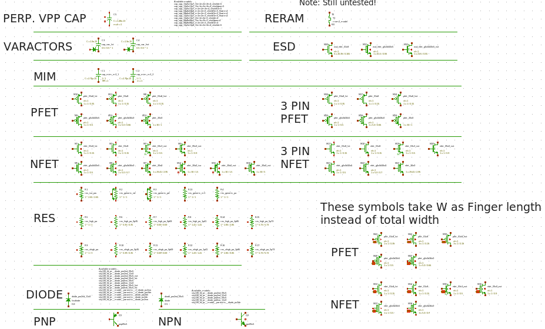
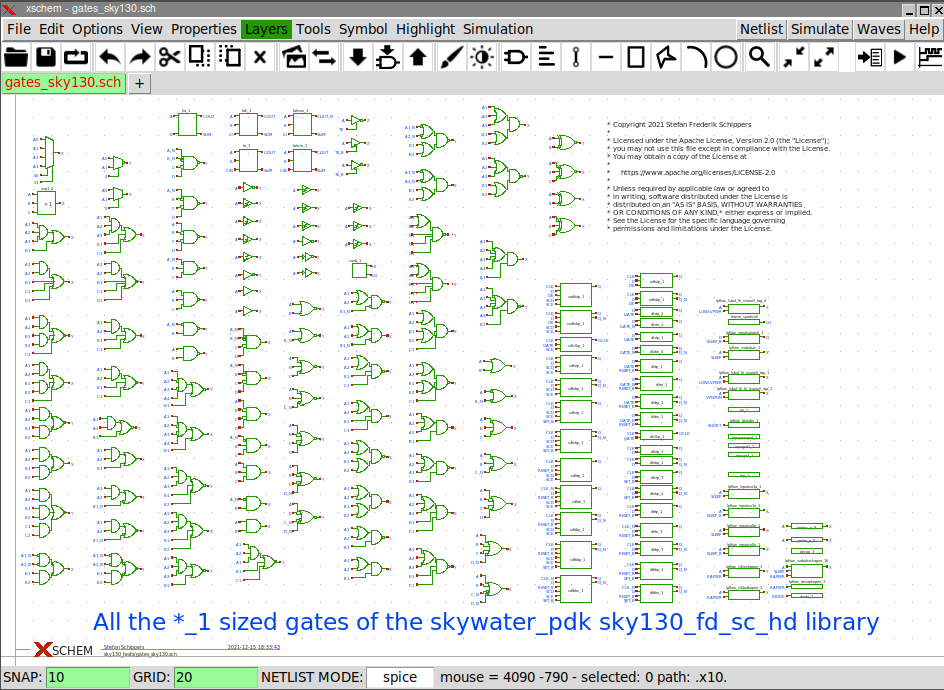

PREV
UP
NEXT
SKYWATER 130nm PDK INTEGRATION
Use Xschem for (Analog) chip design and interoperate with other open source EDA tools using the Skywater open source 130nm process PDK
- Develop symbols for primitive devices (MOS, capacitors, resistors, BJTs, ...).
- Primitive silicon devices take geometrical parameters and produce a valid simulation-ready spice (Ngspice, Xyce) netlist.
- Develop symbols for the digital standard cell library.

